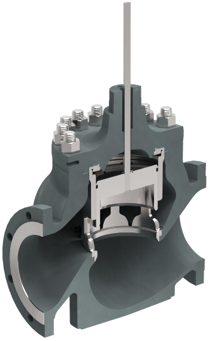
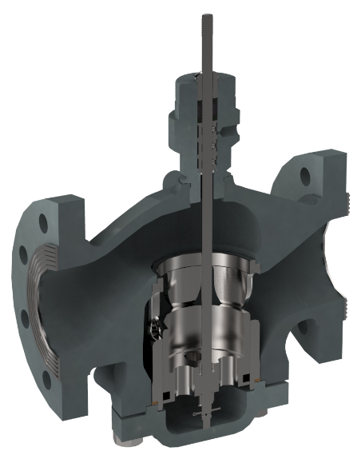

PDTC vs. PDTO Valve Bodies


Body orientation is the second half of what sets fail action: the same actuator drives the plug toward the seat on one body and away from it on the other.


Body orientation is the second half of what sets fail action: the same actuator drives the plug toward the seat on one body and away from it on the other.